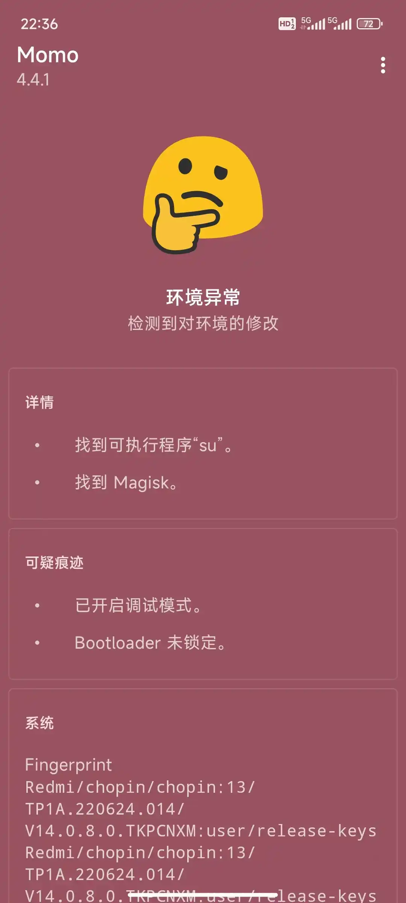
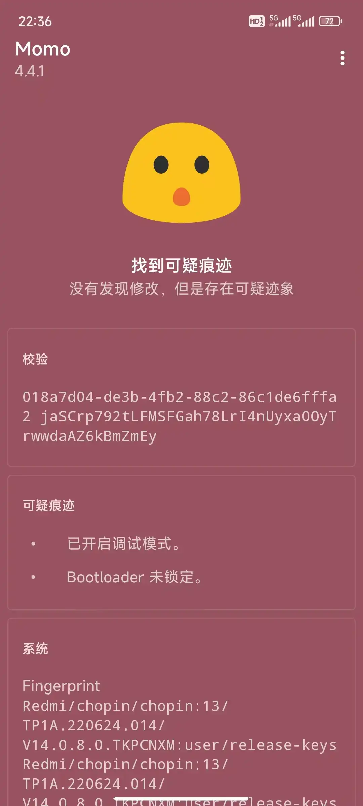
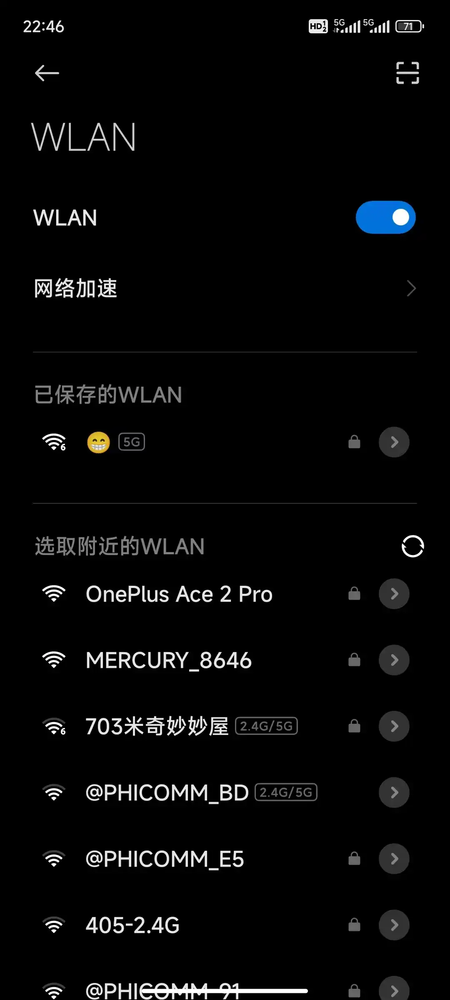
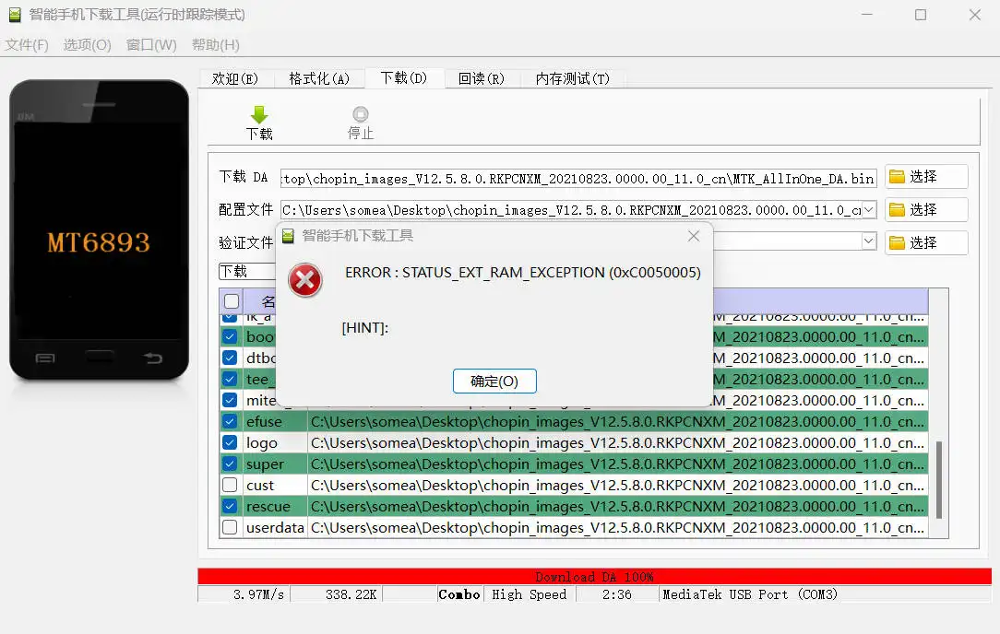

Root备忘录
root备忘录
前言
本人的手机于2022年2月7日购入，如今它的电池已经不耐操了，一天要两充到三充。可是它运行流畅（指流畅运行巨信），现在换机显得浪费我这个芯片了。那么，改一下系统调度会不会好一些呢🤔。好，来刷个机吧。
以下记录了遇到的问题以备日后不时之需。
设备
- Redmi Note 10 Pro[1]
root
用小米解锁工具解锁之后，第一次重启卡在了MIUI界面，想起来解锁前忘记打开“OEM解锁”了，吓得我一身冷汗😰。好在第二次重启成功了，没有变砖🥰。
过momo检测
我使用了kitsune mask作为root管理器，它本身提供了较强大的隐藏root的功能。隐藏root有白名单和黑名单两种模式。一般使用黑名单模式即可，不过勾选进黑名单的应用貌似无法启动，会卡白屏（测试了微信和momo两个应用），大概是我手机的玄学问题吧。白名单模式就没事了。
开启隐藏前：

开启隐藏后：

至于bootloader未锁定，可以通过刷safetynet fix模块来骗过momo，但不知道能不能骗过其他程序。
微信小程序无法打开
下载了Google play版微信，但发现小程序打不开😱，点小程序就卡在“正在加载”，难道是root的问题？瞎调一番后，偶然打开Google play，提示正在更新微信，更新完就能开小程序了😅。
无法连接WiFi
打算连接舍友的手机热点，发现连不上，怎么点都显示“已保存”。几番调试，发现是无法连接WPA3-Personal加密的WiFi，其他加密方式可以连。但是之前我倒是可以连舍友WiFi。目前暂未找到解决方案。

类原生之旅
网上看到DSU Sideload这个软件.它利用了安卓自带的动态系统更新功能，但是可以自己分配动态系统的用户数据空间。也就是说，可以讲这个动态系统作为主力系统使用🤪。于是尝试了刷入CrDroid的GSI(通用系统镜像)。这可是人生中第一次用类原生当主力机器🥰。但是毕竟没经过适配，所以系统有Bug。
CrDroid 9.X（安卓13） 版本下的bug：
- 蓝牙断连
- 5G环境下无法通话和收发短信
- 无法使用杜比全景声
CrDroid 10.X（安卓14） 版本下的bug：
- 无法使用人脸识别
- 仅使用了几天，测试不全
刷上去之后，本以为可以回到一天一充的时代，但是貌似是我高估了类原生了。一天两充还是最低标准😥。看来就是硬件损耗了。
用了一段时间，还是不能自适应这些bug，而且续航并没有提升。还是回去MIUI吧😅。
为什么这一段没图呢？因为手机现在已经变砖了
愿你刷机半生，归来…归不来了啊啊啊
前文提到我使用的是动态系统。回去之前的MIUI14还是很顺利的。但是有一个说法：出厂系统就是最好的系统。于是决定刷回出厂的MIUI12.5.
当然是选择最安全的Fastboot + miflash刷机大法。但在此之前，我萌生了个想法：何不把boot.img文件用magisk修补之后放回刷机包呢，这样就不用再次进Fastboot来root了🤪。
经过漫长的等待，得到的是进度条的标红＞﹏＜，提示check boot_ab failed。看起来我偷梁换柱的计划露出鸡脚了。但是它还停留在Fastboot界面。
好吧，已老实。刷原系统吧。这下总不会有问题吧，于是我安心地去刷牙了（此时是22：40）。
事实证明，不要晚上刷机。刷完牙回来，天都塌了
屏幕上鲜艳的红条直接让我心肺骤停（也是提示check xxx failed）。？？？，这还能报错？屏幕还黑了？尝试重新进入Fastboot…
它没反应！！！而且电脑还一直有插入、拔出设备的提示音！看着计算机设备上的MediaTek device陷入了沉思，这是给我干进深度刷机里了？
按照网上方法，使用SP Flash救砖。但是多次尝试，换了两个刷机包，仍然报错

已经23：45了，明天还要上课＞︿＜。当机立断，下单Redmi K80，以后再也不乱搞主力机了😭。想不到我也有冲首发的一天
我敬爱的Redmi Note 10 Pro同志Fastboot刷机失败，深度刷机抢救无效，于2024年11月28日逝世，享年2.8岁
还是选择了闲鱼花30￥让手机起死回生，现在它又活了*^____^*。
为什么之前刷不进去呢？据闲鱼卖家说，刷入官方包的DA.bin文件需要验证，所以会卡红条。
参考文献
红米 note 10 pro 刷入 crDroid 9.17 GSI
MTK（联发科）黑砖拯救（无法进入fastboot或recovery）
如何正确解决 SP FLASH TOOL for MERLIN 的错误